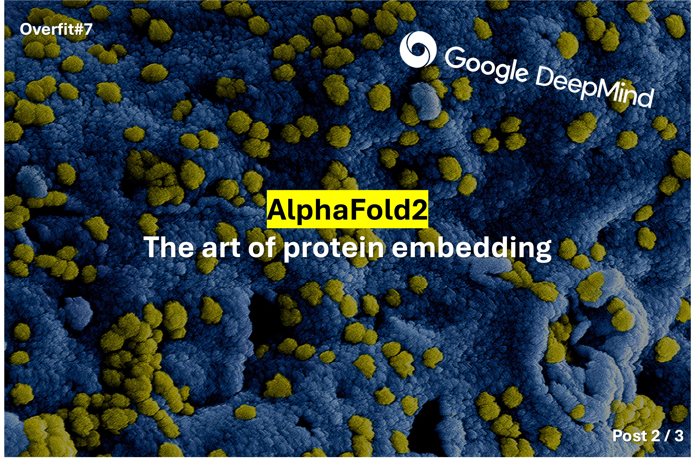
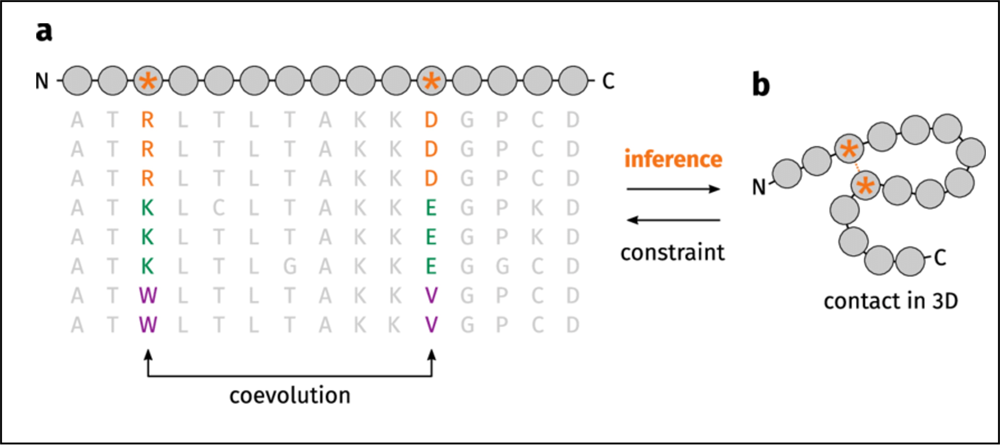

Overfit#7: AlphaFold2: The Evoformer network

Before you start
This post is the second episode of a series about the AlphaFold2 paper1235. If you haven't already, I highly recommend to read the introduction first:
Multi Sequence Alignment
DeepMind engineers encapsulated the concept of co-evolution in their model.
Co-evolution refers to the observation that residues (other name for amino acids) that bind together with non-covalent bonds, should mutate together, to keep the bonds intact. Therefore, if you know the sequences of proteins that are highly similar to your target sequence (let's say you have the hemoglobin protein for human, fish, dog, and cat), you can align the sequences and look for co-evolving columns. If columns evolve in pairs, the 2 residues may have a bond, and thus be spatially close.
The core idea of DeepMind's team is thus to provide not one but multiple sequences that have a strong similarity with the sequence of interest. That multiple sequence batch is called a Multi Sequence Alignment (MSA).4
🔎 To construct the MSA, they first query a sequence database with sequence similarity and sequence alignment tools. In the end, the MSA is a \(N_{sequences} \times N_{residues}\) matrix.

Evoformer
The Evoformer acts as a feature extractor/refiner. Its role is to embed the protein sequence into a meaningful dual vectorial representation. It returns:
- An updated version of the MSA (\(N_{seq} \times N_{res}\))
- An updated pair representation: a square matrix of the predicted distances between each residue pair (\(N_{res} \times N_{res}\)). For the first iteration, I guess this matrix is either initialized as random or with some initial guess.
The key innovation of the Evoformer is its coupled update mechanism, in which both co-evolutionary and spatial representations interact with each other. The updates rely on attention and not-attention-based layers.
The choices are not always justified in the paper, I will try to give you the intuitions. But keep in mind that the model architecture was surely defined by test-error iterations.
MSA update
To update the MSA matrix, the Evoformer relies on two attention layers that act either on rows or on columns. Recall that the rows are unique sequences and that columns are residues at the same position in different sequences.
1️⃣ The first update is a row-wise update, that analyzes each sequence independently. It uses gated self-attention with pair bias:
- The keys, queries, and values are computed like in the transformer architecture.
- The authors add the pair representation to bias the attention weight matrix. This is possible because both matrices are \(N_{res} \times N_{res}\). This allows information crossing.
- A gating mechanism removes useless information at the end of the layer (top skip connection in the figure)
2️⃣ The second MSA update is a column-wise update that compares residues at the same position in different sequences. This operation is highly similar to step 1️⃣ but without the pair bias.
Pair update
We covered the upper part of the Evoformer, let's study the lower part, in charge of the pair representation update.
3️⃣ The third step updates the pair representation with the updated MSA representation, using an outer product mean. The choice of the outer product is hard to justify. My intuition is that to update the \(ij\) coefficient of the pair matrix, we need a 1D vector made of residues \(i\) and \(j\). The authors thus compute the outer product between columns \(i\) and \(j\) of the MSA, which gives a \((S \times R \times C)\) matrix, and they then compute the mean over the sequence dimension and flatten it to get a 1D vector. The ultimate Linear layer ensures that the channel dimension matches.
4️⃣ We could stop here for the pair representation, but the authors then enforced geometric constraints on the pair representation. In fact, the network could predict impossible residue positions. To avoid that, the authors added some layers to enforce the triangular inequality \(ij + jk \geq ik\).
Hence AlphaFold2 makes use of \(2 \times 2\) modules:
- Triangular multiplicative update using outgoing/incoming edges
- Triangular self-attention update around starting/ending nodes
To be honest, I don't fully understand these blocks. To simplify, they essentially take 2 residues as input (so usually two rows of the pair matrix), and they compute an update for a third residue. For more details, I recommend reading the Supplementary paper, that DeepMind released with Nature's paper.
Extra
The paper mentions that the triangular multiplicative update was originally designed as a cheaper alternative to the triangular attention update. According to their experiments, using the two simultaneously gave better results, so they kept both. Here are the inner mechanisms of these blocks.
Transition
5️⃣ Transition blocks are feedforward layers that first widen the channel dimension and then squeeze it back to its original dimension. Their role is to refine the embedding, like in the FF part of the transformers.
Conclusion - Evoformer
The Evoformer is the feature extractor of AlphaFold2. It refines the MSA and the pair representations in parallel and tries to extract co-evolutionary hints to guess the distances between the residues.
-
Jumper, J., Evans, R., Pritzel, A. et al. Highly accurate protein structure prediction with AlphaFold. Nature 596, 583–589 (2021). https://doi.org/10.1038/s41586-021-03819-2 ↩
-
Heidelberg AI Talk 5th of May 2022 | Highly Accurate Protein Structure Prediction with AlphaFold | Simon Kohl, DeepMind. https://www.youtube.com/watch?v=tTN0MM2CQLU ↩
-
DeepMind website, AlphaFold technology: https://deepmind.google/technologies/alphafold/ ↩
-
Picture: from S. Bittrich & al., Structural relevance scoring identies the most informative entries of a contact map. https://www.researchgate.net/publication/337787176_StructureDistiller_Structural_relevance_scoring_identifies_the_most_informative_entries_of_a_contact_map ↩
-
Supplementary Information for: Highly accurate protein structure prediction with AlphaFold: https://static-content.springer.com/esm/art%3A10.1038%2Fs41586-021-03819-2/MediaObjects/41586_2021_3819_MOESM1_ESM.pdf ↩